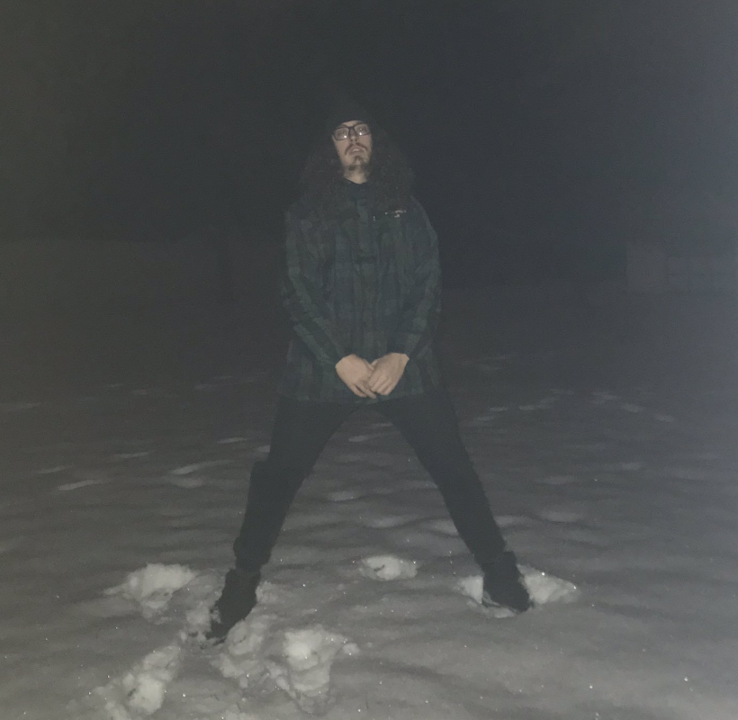

About Me
“I’m just sick of ego, ego, ego. My own and everybody else’s.
I’m sick of everybody that wants to get somewhere,
do something distinguished and all, be somebody interesting.
It’s disgusting.”
-J.D. Salinger, 'Zooey'

Nico Reed is a 26 years old make born in Akron, OH to parents Judie Martter
and Dean Reed. The son of a bartender and a chef respectively, Nico was born
with an affinity for the culinary side of life. Between helping his father prepare catering orders
as early as the age of 7 or visiting his father's corporate workplace in the kitchenof BF Goodrich
the seed of cuisine was planted in pre-pubesence.
Although things did not pan out similairly career wise. Upon graduating High School Nico attended
Ohio University in Athens, OH. Studying Journalism for about half a year before realizing that is was so expensive
that he would have to sell his organs to continue his higher education. Going back to square one at the age of 19
Nico worked various restaurant jobs and continues to do so.
Among music, creating collecting and listening, being his primary interest Nico also enjoys long thru hikes
with friends.